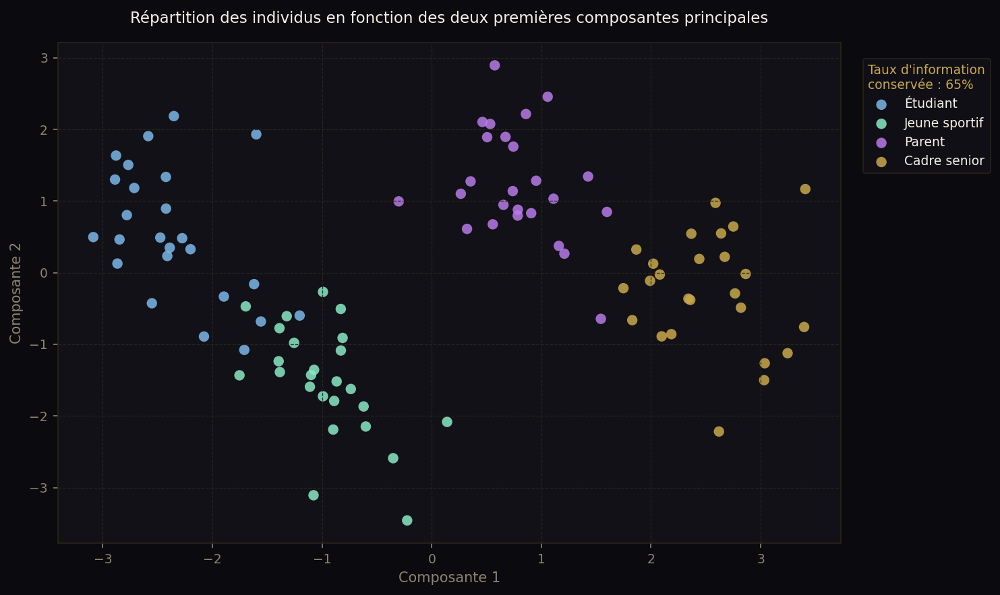

Les méthodes d'analyses de données telles que l'ACP, l'AFC ou encore l'ACM sont assez intimidantes au premier regard. Ce projet est né d'une envie de démystifier ces concepts en les appliquant à des situations concrètes. J'ai découvert au fil du projet que la majorité des mathématiques derrière ces méthodes sont accessibles et compréhensibles. J'essaye donc ici de présenter ce que j'ai découvert avec ces méthodes de manière vulgarisée, sans sacrifier la rigueur scientifique.
// 01 — Introduction
Analyse de données
// 02 — Analyse de données
ACP
L'objectif de l'analyse en composantes principales (ou ACP) est de pouvoir rendre plus "évident" des liens entre plusieurs individus par rapport à plusieurs caractéristiques. Cette méthode est souvent vue comme permettant l'étude des ressemblances.
Imaginez que vous avez interrogé une centaine de personnes sur leurs caractéristiques personnelles : poids, taille, âge, salaire annuel, niveau d'études, nombre d'enfants, score QI et heures de sport hebdomadaires.
Vous vous retrouvez alors avec un tableau de cent lignes et huit colonnes. À l'œil nu, impossible d'y voir un quelconque motif : qui ressemble à qui ? Quelles caractéristiques vont souvent ensemble ? Existe-t-il des profils types ?
C'est exactement ce que l'ACP permet de faire : résumer toutes ces caractéristiques en un nombre réduit de nouvelles caractéristiques, appelés composantes principales. L'ACP ne supprime pas de caractéristique, elle "regroupe", par le calcul, plusieurs caractéristiques pour en créer des nouvelles.
Dans cet exemple vous pourriez, à l'aide de l'ACP, réduire ces 8 caractéristiques en 2 caractéristiques donnant finalement une liste de "coordonées" sur un plan. La première colonne (nouvelle caractéristique) donnant la position de chaque individu sur l'axe horizontal et la deuxième, sa position sur l'axe vertical. Cela permettrait de visualiser les ressemblances et de remarquer des profils types regroupés dans les mêmes zones du graphique.
En termes mathématiques, l'ACP cherche à projeter les données dans un espace de taille réduite tout en conservant le maximum d'information.
Mais alors, comment cela fonctionne concrètement ?
Premièrement, pour réaliser une ACP nous avons besoin d'un tableau de valeurs (une matrice). Chaque ligne représentera un individu et chaque colonne représentera une variable (caractéristique) comme suit :
| Individus ↓ / Variables → | X1 | X2 | X3 | X4 | X5 |
|---|---|---|---|---|---|
| Individu 1 | x11 | x12 | x13 | x14 | x15 |
| Individu 2 | x21 | x22 | x23 | x24 | x25 |
| Individu 3 | x31 | x32 | x33 | x34 | x35 |
| Individu 4 | x41 | x42 | x43 | x44 | x45 | ⋮ ⋮ ⋮ |
Avant de réaliser des calculs avec les valeurs de la matrice, nous devons éviter que certaines valeurs en "écrasent" d'autres (comme le salaire avec l'age par exemple). Pour éviter cela, il existe une méthode qui consiste à centrer les valeurs, c'est-à-dire faire en sorte que la moyenne sur chaque colonne soit nulle (soustraire la moyenne des valeurs de la colonne à toutes les valeurs de la collone). Puis après cela "réduire" les données, c'est-à-dire faire en sorte que la variance soit égale à 1 pour chaque colonne (caractéristique). Le processus de centrer + réduire s'appelle la normalisation ou standardisation. Grâce à cette méthode, les caractéristiques de plus grande valeur ne peuvent plus "écraser" les autres car elles sont toutes à la même échelle.
Comprendre le centrage et la réduction est très important, le reformuler en français aide non seulement à comprendre mais aussi à retenir un concept plus facilement (et pouvoir retrouver les formules par logique sans les apprendre). Ma vision des chose est la suivante : je vois le centrage comme donner un point de repère et la réduction comme ramener toutes les variables à une échelle communes autour de notre point de repère.
Maintenant que la matrice est centrée-réduite, nous pouvons réaliser une ACP correctement. L'objectif est de trouver une matrice \( V \) telle que \( P = RV \) soit une matrice dont chaque vecteur est indépendant (matrice orthogonale), c'est-à-dire que chaque nouvelle caractéristique soit décorrélée des autres. On cherchera également à faire en sorte que l'information contenue dans la matrice \(P\) soit hiérarchisée, c'est-à-dire que chaque colonne donne moins d'information que la précédente.
Pour trouver cette matrice \(V\) nous avons découvert un outil très puissant cette année : la décomposition en valeur singulières (= SVD = Singular Value Decomposition). Comme cette méthode pourrait faire l'objet d'un projet à elle seule, je ne la détaillerai pas ici. Cependant, voici le concept en bref : une SVD permet de décomposer une matrice en trois autres matrices ayant les propriétés que l'on recherche ici (l'orthogonalité et la hiérarchisation). Je vais donc l'utiliser pour réaliser une ACP sur une base de données générée par intelligence artificielle. Voici le code python écrit pour l'occasion :
import numpy as np
import pandas as ps
import matplotlib.pyplot as plt
#%% Création de la fonction qui réalise l'ACP
def ACP(R):
"""
Déroulement de l'ACP
- Centrage (Manière matricielle)
- Réduction (Manière matricielle)
- Calcul de la SVD
- Calcul de la matrice P
Entrée
R : Matrice non normalisée sur laquelle réaliser l'ACP
Sortie
P : Matrice des composantes principales
Epsilon : Vecteur des valeurs singulières de la SVD, permet de
calculer le pourcentage d'information contenu dans les
n permières composantes principales
"""
# Récupération de la taille de la matrice
m,n = np.shape(R)
# Centrage de la matrice
R = R - 1/m*np.ones((m,1))@np.ones((1,m))@R
# Réduction de la matrice
variable = []
for i in range(n):
variable.append(np.sqrt(1/m*sum(R[:,i]**2)))
D = np.diag(variable)
R = R@np.linalg.inv(D)
# SVD de la matrice centrée-réduite
U,Epsilon,VT = np.linalg.svd(R)
# Calcul de la matrice P
P = R@VT.T
return P, Epsilon
#%% Importation, traitement des données et mise sous forme de matrice
# Définition du chemin vers les données (enregistrées en csv)
chemin_donnees = "donnees_acp_avec_profils.csv"
# Importation des données via Pandas
df = ps.read_csv("Data/" + chemin_donnees)
# Sauvegarde des différents profils avant suppression de ceux-ci pour
# afficher des points de différentes couleurs par la suite
Profils = df["Profil"]
# Suppression des colonnes non pertinentes pour la comparaison (profil et ID)
df = df.drop('Profil', axis=1)
df = df.drop('ID', axis=1)
# Mise sous forme de matrice
R = df.to_numpy()
# Execution de l'ACP sur R
P, eps = ACP(R)
# Calcul du pourcentage d'information conservée avec seulement deux composantes
taux_info = int(((eps[0]**2 + eps[1]**2)/sum(eps**2) )* 100)
# Dictionnaire des couleurs en fonction des profils
couleurs_des_points = {
"Étudiant" : "blue",
"Jeune sportif" : "red",
"Parent" : "green",
"Cadre senior" : "black"
}
# Affichage des différentes couleurs pour chaque profil
for profil, couleur in couleurs_des_points.items():
masque = profil == Profils
# Ajout des points sur le graphique
plt.scatter(P[masque,0], P[masque,1], c = couleur)
# Paramètres du graphique (titres et légendes)
plt.title("Répartition des individus en fonction des deux premières composantes principales")
plt.legend([i for i in couleurs_des_points.keys()], loc="upper left",
bbox_to_anchor=(1, 0.75), title=f"Taux d'infomation conservée : \n {taux_info}%")
plt.xlabel("Composante 1")
plt.ylabel("Composante 2")
plt.grid(visible="True")
plt.show()
En éxécutant cet algorithme, on obtient le graphique suivant :

Figure 1 : Résultat après exécution du script Python (adapté à la DA)
Le graphique nous montre que les individus avec des caractéristiques en commun sont "regroupés", pile ce que l'on voulait vérifier. Les axes ne représentent rien physiquement ici, ce sont les valeurs des composantes 1 et 2, un mélange judicieux de toutes les autres variables. Chaque point représente cependant bien un individu, en prenant deux points on pourrait alors comparer deux individus dans le tableau d'origine si l'on voulait faire une analyse plus fine. On remarque également que seulement 65% de l'information est conservée, donc 35% n'est pas visible sur ce graphique. Pour aller plus loin on pourrait comparer les données en 3 dimensions si le résultat ne nous convenait pas ici. Celle-ci nous convient car cette base de données a été créée pour l'occasion et j'ai demandé à l'IA de créer des profils types pour avoir un résultat visuellement convaincant, c'est pour cette raison qu'avec si peu d'échantillons nous arrivons à avoir autant de groupes distincts. En pratique nous aurions sûrement besoin de plus d'échantillons pour avoir de tels résultats si les individus étaient réellement choisis de manière aléatoire.
Pour conclure sur cette démonstration, j'espère vous avoir convaincu du fait que l'ACP est un outil très puissant dans son domaine. Assez compliquée à comprendre mathématiquement mais accessible conceptuellement. Elle permet par exemple de faire des classifications. Cela peut être classifier des fleurs par rapport à plusieurs caractéristiques (longueur des pétales, largeur des sépales, etc), mais toujours avec des caractéristiques quantitatives.
Une question survient alors : est-il possible de faire cela avec des caractéristiques qualitatives (couleur, catégories, oui/non) ? La réponse est oui et l'algorithme lié s'appelle l'ACM (ou Analyse des Correspondances Multiples). Pour comprendre cet algorithme il faut d'abord comprendre l'AFC, qui est le fondement même de l'ACM.
// 03 — Analyse de données

AFC
Contenu de la page AFC.
Légende de l'image
// 03 — Analyse de données

ACM
Contenu de la page ACM.
Légende de l'image